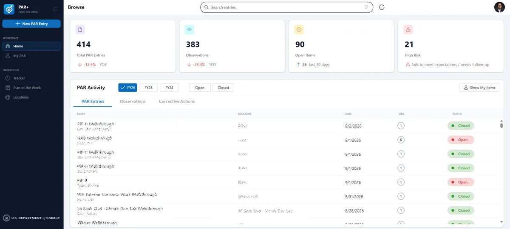
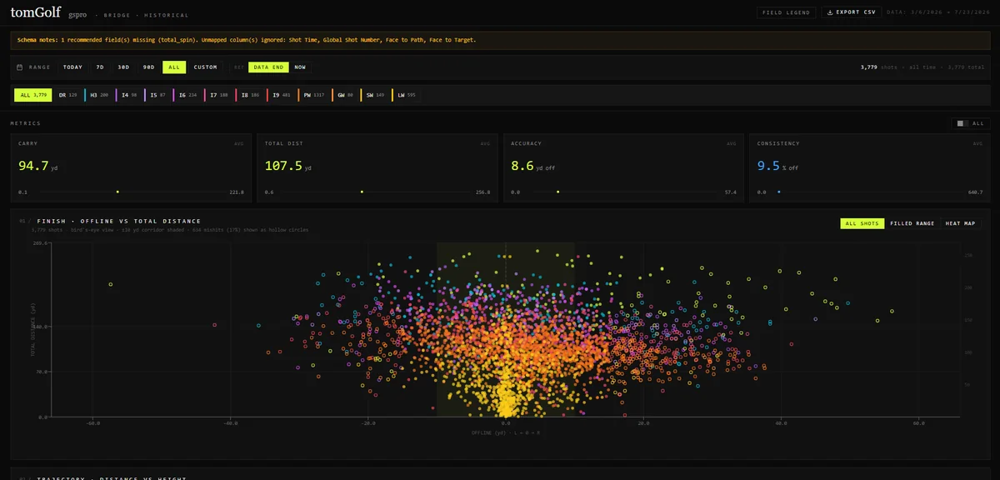

Exploded view
Five layers, one scale
Keep scrolling to pull them apart, or pick a layer.
Open to new work · Chicago, IL
Tom Wells — Power Platform developer and solution architect. Power Apps, Power Automate and Power BI in production for the U.S. Department of Energy’s Fermilab Site Office. Previously General Motors, 1,128 dealerships.

The tools under the work
Intro
Most of my work is the same five layers with a different problem on top. Interviews, process maps and requirements decide what goes in each one.
Then I build it, so a number means the same thing in every report, the decision happens where the request lands, and nobody has to chase a handoff.
Stack
From the raw record to the report on someone’s desk, every project is built from the same parts.
Exploded view
Keep scrolling to pull them apart, or pick a layer.
01 of 05
SQL Server, Oracle and SharePoint Online: the raw record, wherever it already lives. T-SQL and Postgres to get at it.
In the work: Contractor Performance Dashboards
02 of 05
One star schema over all of it, so a number means the same thing in every report. DAX and Power Query for reporting, Dataverse for apps.
In the work: Contractor Performance Dashboards, PAR+
03 of 05
Power Automate moves work between people: approvals, notifications, the handoffs nobody wants to chase.
In the work: Contracting Officer Approvals
04 of 05
Power Apps where the work actually happens, canvas and model-driven, wired into SharePoint. PAR+ moved federal safety inspections into an app.
In the work: PAR+
05 of 05
Power BI and Tableau on top, reading the model instead of a pile of exports. Python when the question outgrows the dashboard.
In the work: Sales & Inventory BI, GSPro Shot Analytics
Work
Select a row
for the details
A Power Apps canvas app for conducting and recording contractor safety inspections. The UI was prototyped in HTML and validated with end users before the build, which cut rework and post-release change requests.
Star-schema models in Power BI that unify SQL Server, Oracle and SharePoint Online, giving Site Office leadership one view of contractor performance and oversight status in place of siloed manual reporting.
Multi-stage sequential approval flows for recurring contracting-officer workflows, with HTML-formatted Outlook notifications and Teams Adaptive Cards at every stage. Less manual routing, shorter response times.
The decision happens where the request lands.
The Power BI and Tableau reporting layer for the region, giving field managers real-time sales and inventory visibility. I was the regional SME for Power BI, Tableau, SQL and Excel.
A full-stack React and Recharts app with club-segmented visualizations, a distance-weighted consistency metric and CSV export. A Cloudflare Worker proxies the Google Sheets API so credentials never reach the client.

Record
Select any point on the track for the details
Contact
Seeking Power Platform development and solution architecture roles, especially in federal and government contracting.